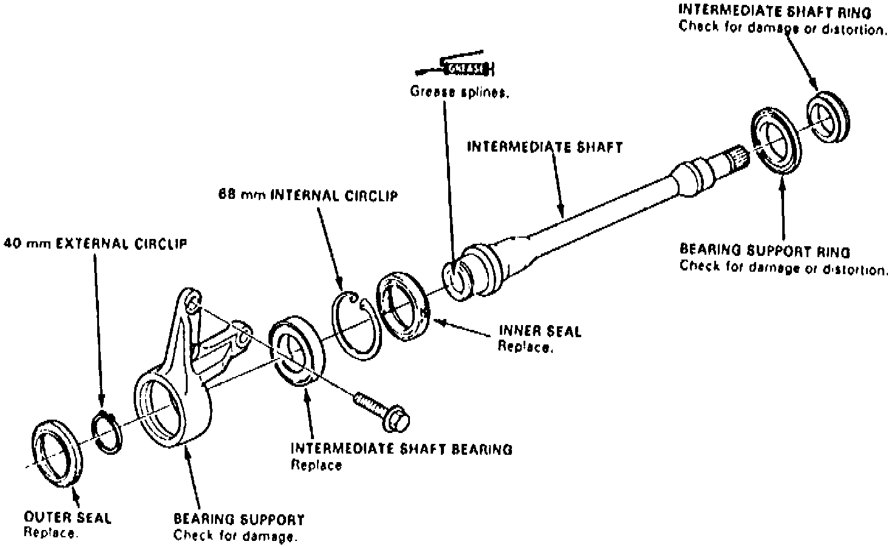
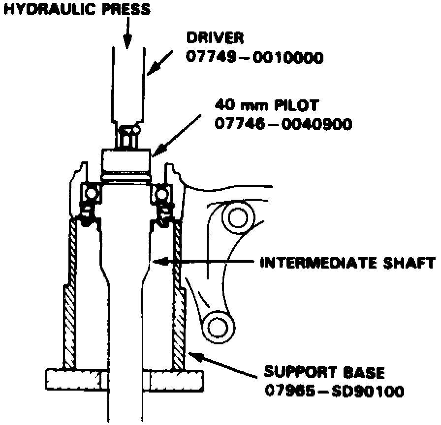
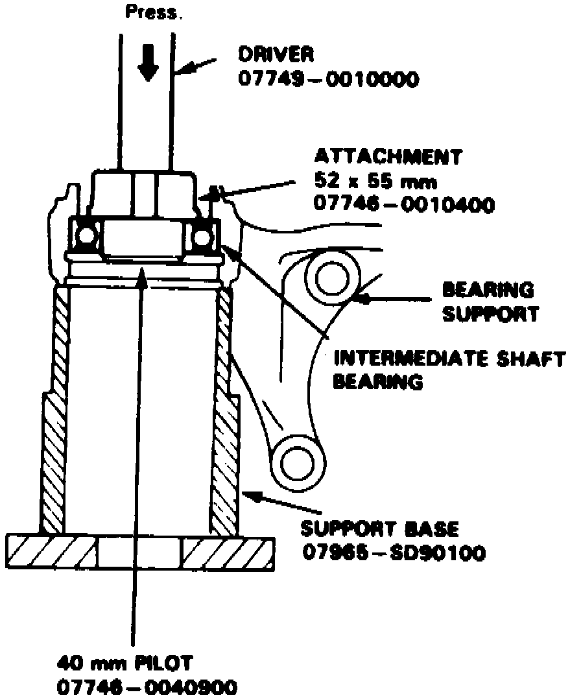
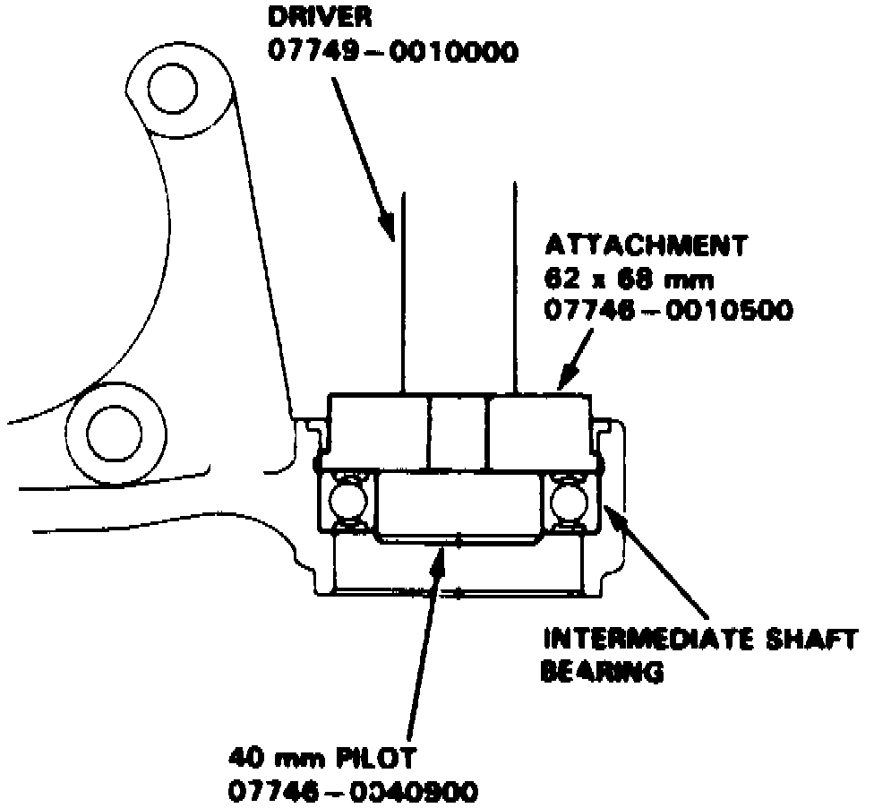
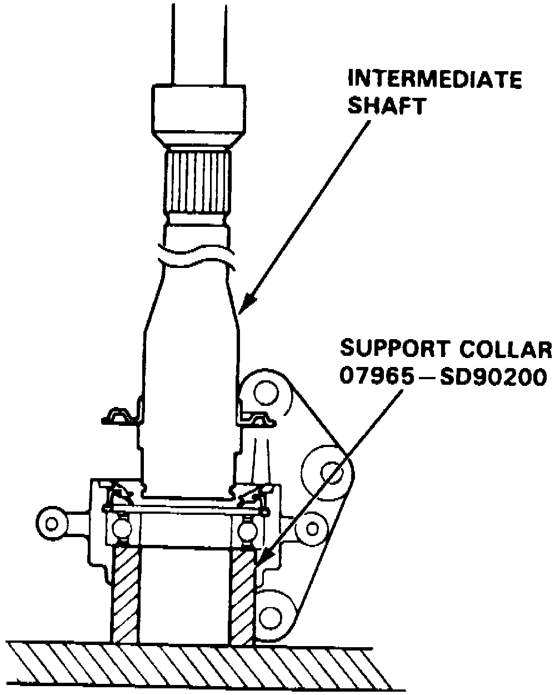
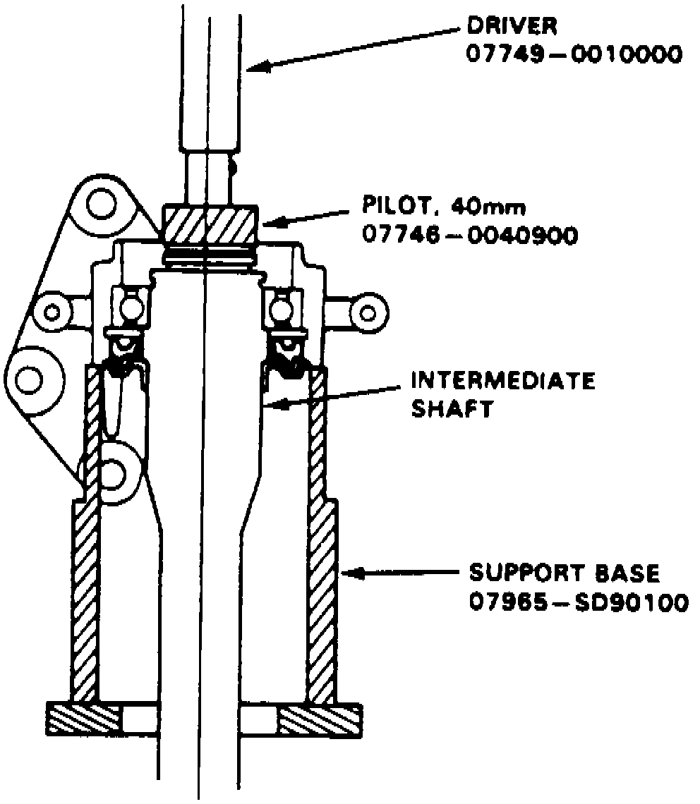
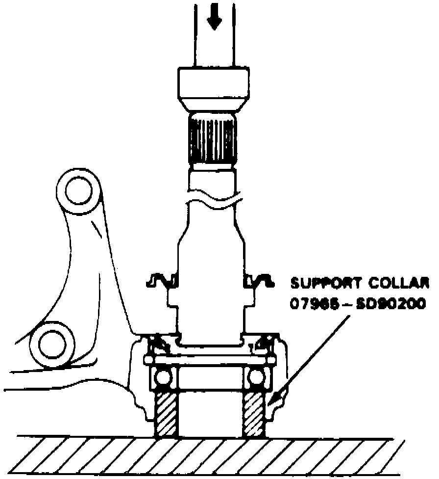

Disassembly/Assembly
DISASSEMBLYFig. 11 Exploded View Of Intermediate Shaft Assembly:

1. Remove outer seal and circlip from bearing support, Fig. 11.
Fig. 13 Intermediate Shaft Removal:

2. Press intermediate shaft out of shaft bearing, Fig. 13.
3. Remove inner seal and circlip from shaft bearing.
Fig. 14 Intermediate Shaft Bearing Removal:

4. Press shaft bearing out of bearing support, Fig. 14.
ASSEMBLY
Fig. 15 Intermediate Shaft Bearing Installation:

1. Press shaft bearing into bearing support, Fig. 15.
2. Install inner circlip into bearing support groove. Ensure tapered end of circlip faces out.
Fig. 16 Intermediate Shaft Inner Seal Installation:

3. Press inner seal into bearing support, Fig. 16.
Fig. 18 Intermediate Shaft Installation:

4. Press shaft into shaft bearing, Fig. 18.
5. Install outer circlip into shaft groove. Ensure tapered end of circlip faces out.
Fig. 19 Intermediate Shaft Outer Seal Installation:

6. Press outer seal into bearing support, Fig. 19.